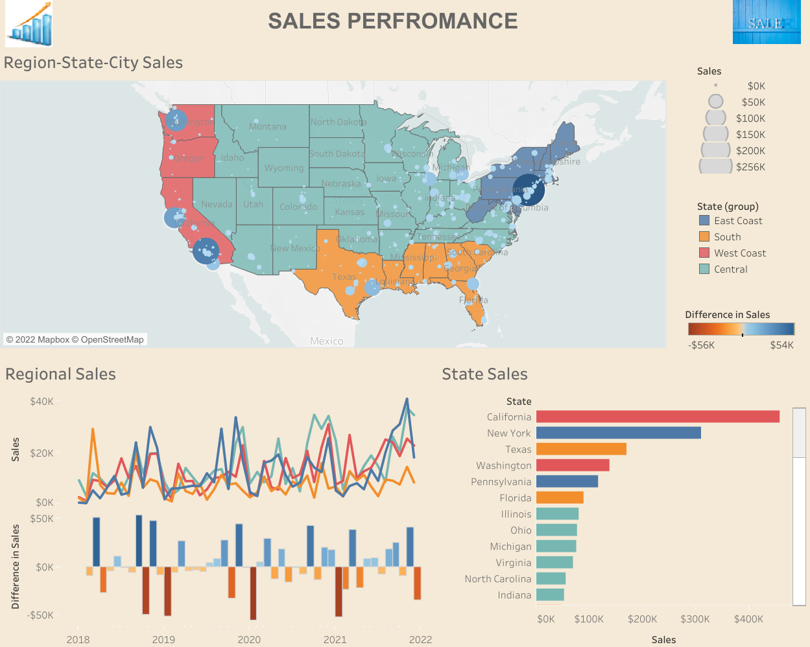
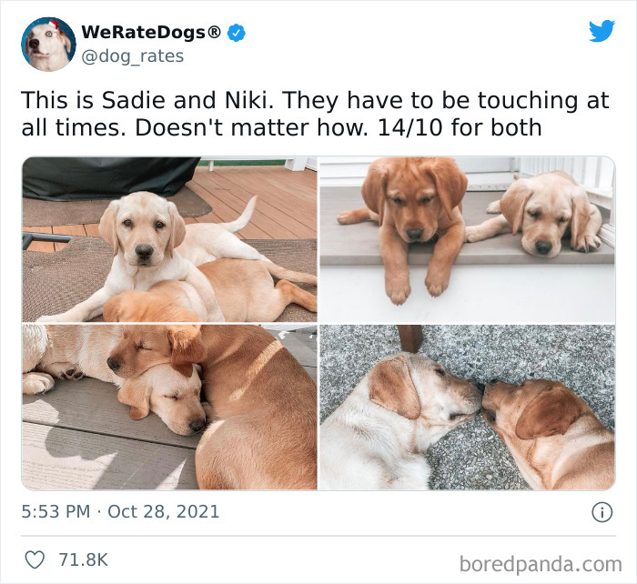

In this project, an indepth analysis of NASA Budgets since the time of inception was carried out. Critical investigation and exploration of their financial data,
after adjusting for inflation, was executed and the findings were also duly documented.
The following questions amongst others were addressed in this project:
- What is the total cost of all planetary missions before and after adjustment for inflation till date?
- What were the most expensive missions?
- How much was spent each year?
- How much was spent on each mission? etc.

Sales, which is integral to any business, was considered in this analysis.
Average sales per city, state and region of USA were considered. The trend of sales over time across the regions was also provided. This all helps in measuring the business performance, KPI evaluation and strategic business decision.

WeRateDogs is an awesome Twitter page that rates people's dogs. This project involves data wrangling of this twitter handle majorly dealing with both the quality and tidiness issues in the data.
One of the three data used was gotten by querying Twitter API.

This Power BI Dashboard helps to shed light on the major issues and complaints from various customers as well as the effectiveness of the agents in charge in resolving those issues.
Vital information about this business performance and subscribers to this service were documented and presented through a slideshow as well.

Businesses always prioritize reducing the turnover rate among their employees. There are many reasons for this: the cost of employing new employees,
the effect on productivity, revenue and profitability of the firm etc. This analysis looks into the possible reasons for this and the sections mostly affected.

Forecasting of number of trips, fare amount amongst others based on the gathered data as well as strategic locations to the firm were conveyed in this project.

The reasons for the delay in flight were looked into and the operation of various airlines were also considered in this project. This analysis was really exciting and challenging, especially the cleaning part, because of the volume of the data (about 6 million).
This project involved scraping of COVID-19 data from WHO website. A dashboard was created to show the distribution of this fatal ailment
across various continents as well as countries of the world. Collating and organizing this data before its presentation was one of the fun part of this project.